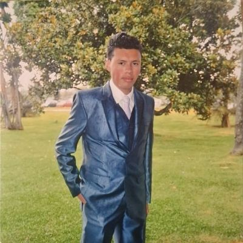

Landing Futurista
Efecto de haz luminoso diagonal al pasar el cursor usando pseudoelementos ::after.

Construyo interfaces modernas combinando @keyframes, transformaciones 3D aceleradas por GPU, transiciones fluidas y scroll-driven animations sin depender de librerías pesadas.
Efecto de haz luminoso diagonal al pasar el cursor usando pseudoelementos ::after.
Flotación continua suave con @keyframes y sombra dinámica sincronizada.
Inclinación espacial con perspective(900px) y rotación en dos ejes.
Resplandor pulsante por capas con box-shadow animado.
Contorno orgánico cambiante animando radios asimétricos de borde.
Borde degradado en movimiento continuo mediante background-position.